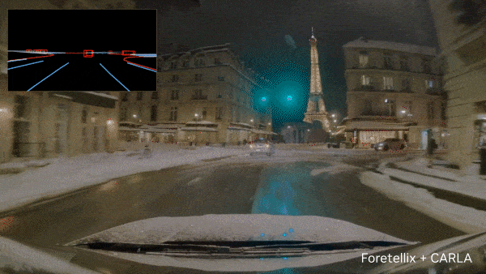
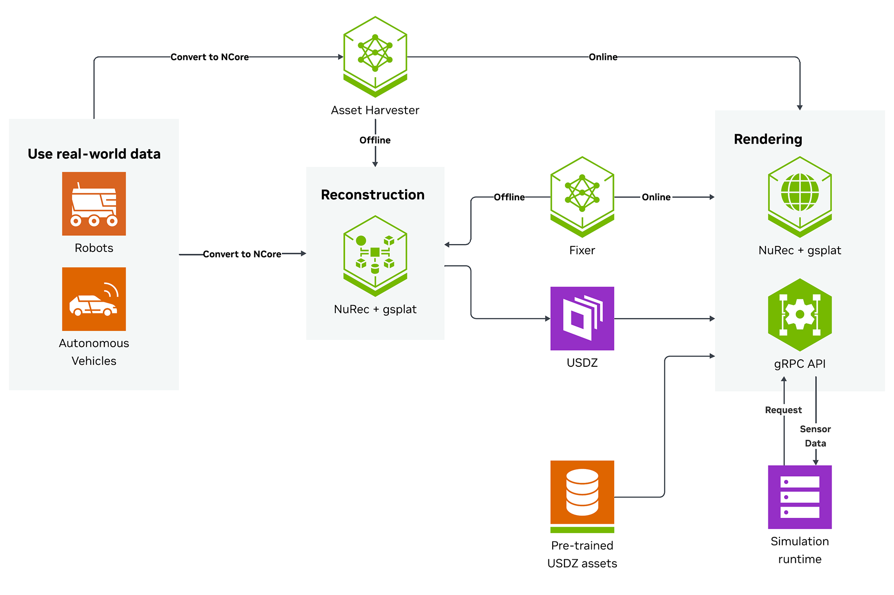
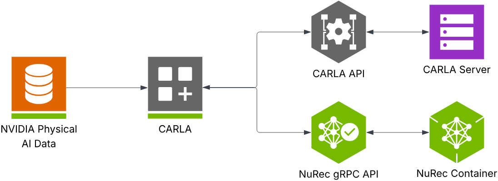

UE5 + 3DGS Plugin
PLY → GPU → Niagara / Shader → Camera
UEのActorやCameraと直接連携。ソート、オクルージョン、GPUメモリ、大規模シーンの性能を検証。
REAL ROAD → INTERACTIVE SIMULATION
実車センサーデータから再構築した環境を、CARLAのシナリオ・車両・評価基盤と接続する。

Camera · LiDAR · Pose
3DGS / NuRec
Multi-Camera
E2E Model · KPI
UEのActorやCameraと直接連携。ソート、オクルージョン、GPUメモリ、大規模シーンの性能を検証。
CARLAが世界状態を管理し、NuRecが画像を返す。サービスを分離し、GPUへ独立して配置。
Camera・LiDAR・軌跡からニューラルシーンを作成し、シミュレーターから新しい視点を描画する。

